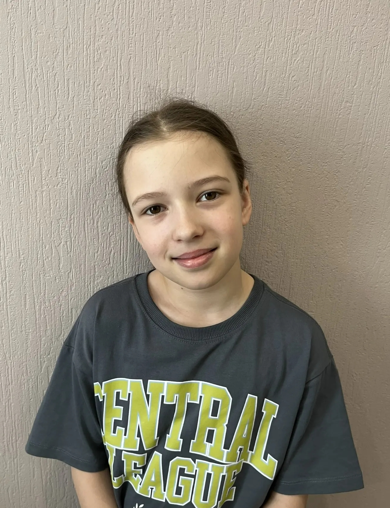
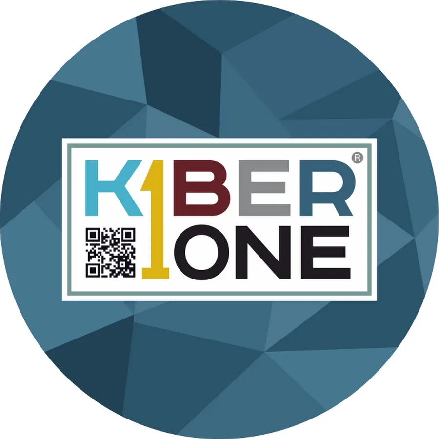
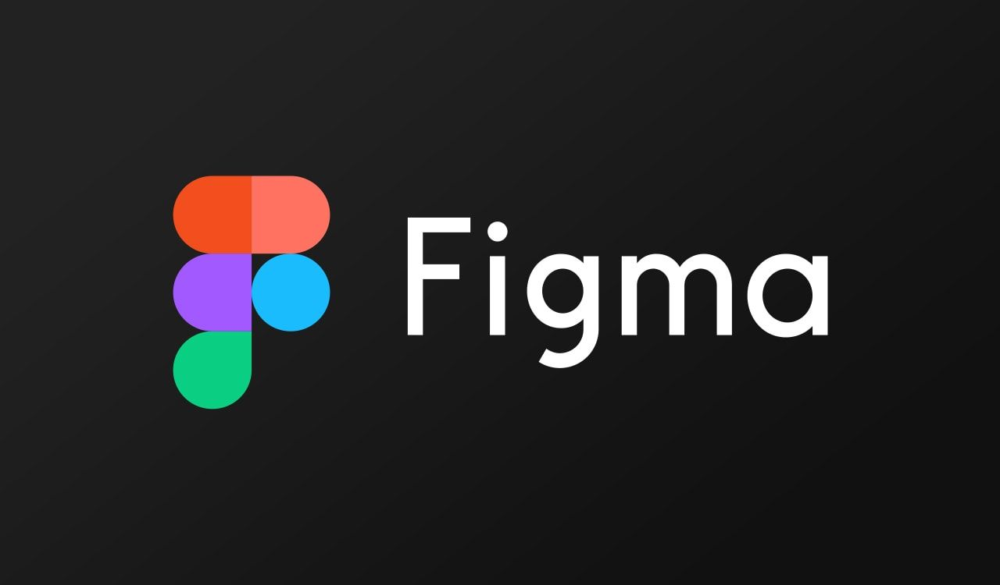
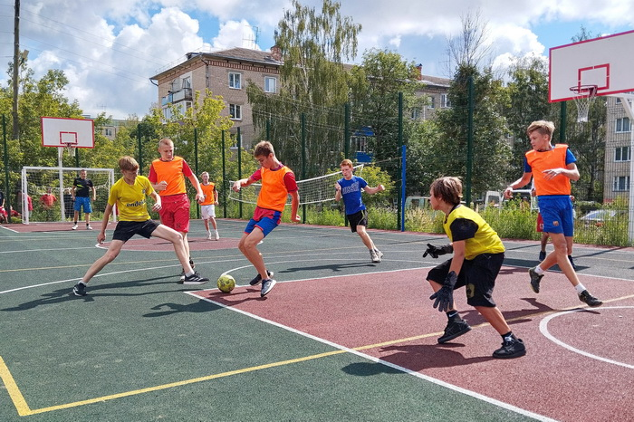

Обо мне

Кряжева Ева
Меня зовут Кряжева Ева, в марте мне исполнилось 9 лет. Я занимаюсь в школе скалолазания "Вверх" и в школе программирования KiberOne. Также я люблю играть в футбол, изучаю английский язык и увлекаюсь чтением книг.
Умная
Решаю трудные задачи
Сильная
Занимаюсь спортом
Дружелюбная
У меня много друзей
О школе программирования

Я хожу в школу программирования KiberOne.
Мне там нравится потому что там интересные модули и очень весело.
В школе Программирования я занимаюсь уже около 3 лет.
Еще летом я хожу в летний лагерь KiberOne.
Перейти на сайт KiberOneМои любимые модули
Minecraft Education
Minecraft Education — это модуль по обучению через игру, где программируют, проводят опыты и исследуют миры
Web-Master
Web-Master - это модуль по созданию сайтов

Figma
Figma — это модуль по созданию дизайна сайтов и приложений

Tilda
Tilda — это модуль по визуальному конструированию сайтов, позволяющий создавать красивые страницы без написания кода
Мои увлечения
| Картинка увлечения | Увлечение | Описание увлечения |
|---|---|---|
| Программирование | За 3 года обучения я успела получить множество полезных знаний, которые в дальнейшем помогут мне стать хорошим IT-специалистом | |
 |
Футбол | Практически каждый день, выходя гулять во двор, я играю с друзьями в футбол |
| Чтение книг | Больше всего я люблю читать книги в жанре фэнтези. Мое самое любимое произведение - серия романов о Гарри Поттере. | |
 |
Скалолазание | Я занимаюсь боулдерингом - это вид скалолазания, представляющий собой прохождение коротких, предельно сложных трасс на небольшой высоте |
| Английский язык | Я изучаю английский язык с 5 лет, мне очень нравится его звучание, и он очень помогает в поездках за границу |